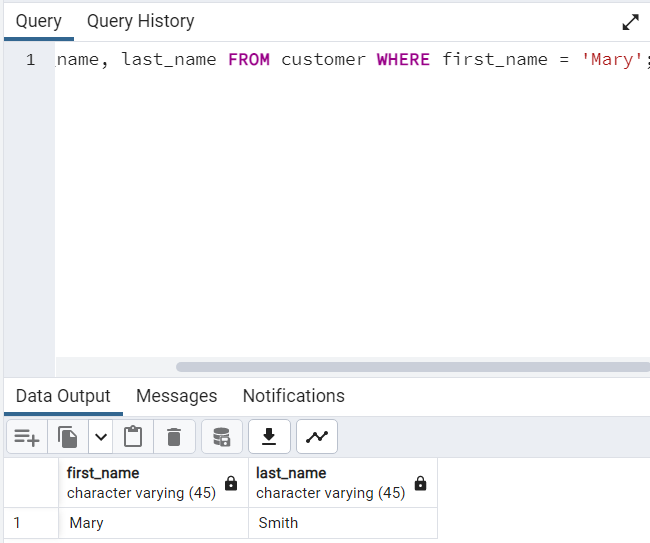
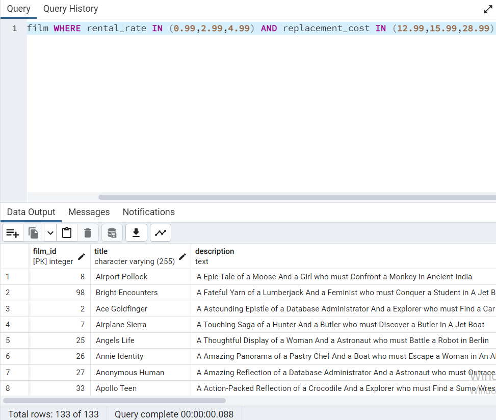

PATİKA SQL ÖDEVLER
-
- film tablosunda bulunan title ve description sütunlarındaki verileri sıralayınız.
- SELECT title, description FROM film;
- film tablosunda bulunan tüm sütunlardaki verileri film uzunluğu (length) 60 dan büyük VE 75 ten küçük olma koşullarıyla sıralayınız.
- SELECT * FROM film WHERE 60 < length AND length < 75;
- film tablosunda bulunan tüm sütunlardaki verileri rental_rate 0.99 VE replacement_cost 12.99 VEYA 28.99 olma koşullarıyla sıralayınız.
- SELECT * FROM film WHERE rental_rate = 0.99 AND replacement_cost = 12.99 OR replacement_cost = 28.99;
- customer tablosunda bulunan first_name sütunundaki değeri 'Mary' olan müşterinin last_name sütunundaki değeri nedir?
- SELECT first_name, last_name FROM customer WHERE first_name = 'Mary';

- film tablosundaki uzunluğu(length) 50 ten büyük OLMAYIP aynı zamanda rental_rate değeri 2.99 veya 4.99 OLMAYAN verileri sıralayınız.
- SELECT * FROM film WHERE NOT 50 < length AND rental_rate = 2.99 OR rental_rate = 4.99;
-
- film tablosunda bulunan tüm sütunlardaki verileri replacement cost değeri 12.99 dan büyük eşit ve 16.99 küçük olma koşuluyla sıralayınız ( BETWEEN - AND yapısını kullanınız.)
- SELECT * FROM film WHERE replacement_cost BETWEEN 12.99 AND 16.99;
- actor tablosunda bulunan first_name ve last_name sütunlardaki verileri first_name 'Penelope' veya 'Nick' veya 'Ed' değerleri olması koşuluyla sıralayınız. ( IN operatörünü kullanınız.)
- SELECT first_name,last_name FROM actor WHERE first_name IN('Penelope','Nick','Ed');
- film tablosunda bulunan tüm sütunlardaki verileri rental_rate 0.99, 2.99, 4.99 VE replacement_cost 12.99, 15.99, 28.99 olma koşullarıyla sıralayınız. ( IN operatörünü kullanınız.)
- SELECT * FROM film WHERE rental_rate IN (0.99,2.99,4.99) AND replacement_cost IN (12.99,15.99,28.99);
